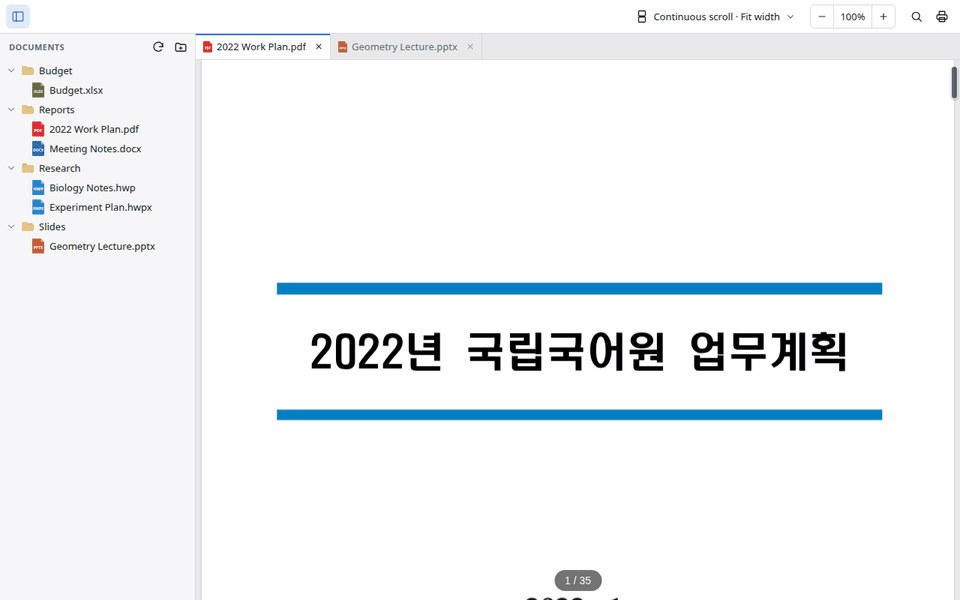
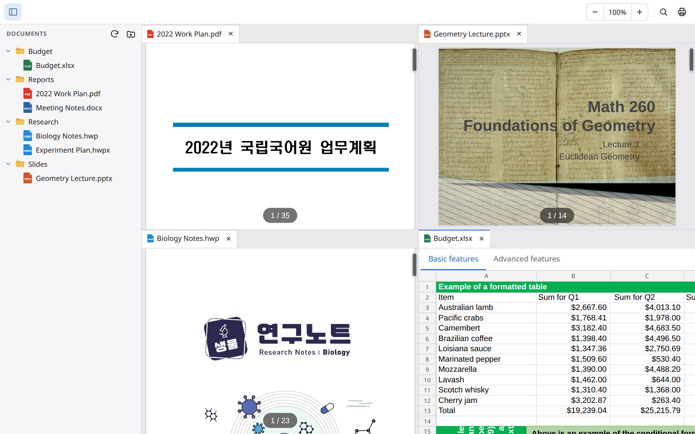
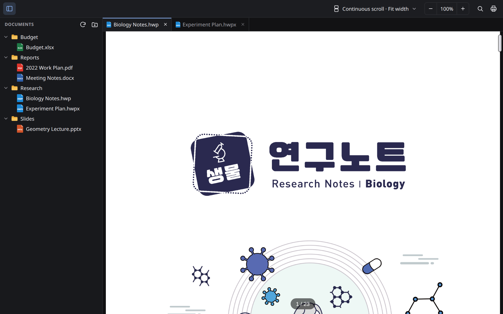
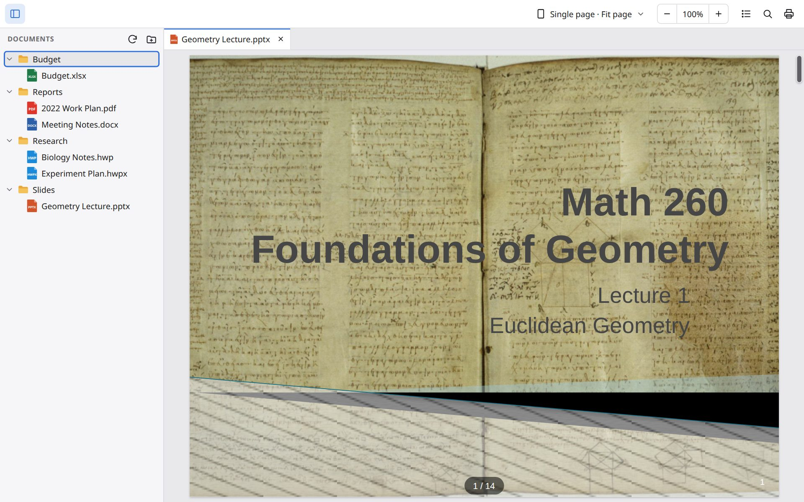

A desktop viewer for PDF, HWP, Word, Excel and PowerPoint files. It works offline on Windows, macOS and Linux.
Free. Latest version: see releases. Source code
Documents are rendered inside the app and are not uploaded anywhere.
PDF, HWP/HWPX, DOC/DOCX, XLS/XLSX/CSV, PPT/PPTX, Markdown and plain text. Files with the wrong extension are detected by content.
Drag a tab or a file to the edge of a document to split the window, up to four panes. Drag the dividers to resize.
Open a folder in the sidebar and keep several documents open in tabs. Rename or delete files from the sidebar.
Open tabs, page, zoom and split layout come back when you restart. Ctrl+Shift+T reopens a closed tab.
Video and audio embedded in PPTX files play on the slide (MP4, MP3 and other formats the system can decode).
No account and no data collection. No internet connection is needed after installation.
Splitting the window by dragging a tab and a file.




The app is not code-signed yet, so the system may show a warning the first time you open it.
Installer (recommended) or MSI package.
Setup (.exe) .msiIf SmartScreen appears: More info → Run anyway. On older Windows 10 without WebView2, the installer downloads it once.
One file for Apple silicon and Intel Macs.
Disk image (.dmg)Not notarized yet: right-click the app → Open, or allow it in System Settings → Privacy & Security.
| Kind | Extensions |
|---|---|
| Hangul (HWP) | hwp, hwpx, hwt |
| Word | doc, docx, docm, dot, dotx, dotm |
| Excel | xls, xlsx, xlsm, xlt, xltx, xltm, csv, tsv |
| PowerPoint | ppt, pptx, pptm, pps, ppsx, pot, potx |
| Text & data | md, txt, log, json, xml, toml, yaml and other text files |
No. Doc Viewer has no server. Files are read from your disk and rendered inside the app.
No. It is a viewer only.
Rendering is done by open-source engines, and fonts embedded in documents are not used yet (system fonts are used instead). Please open an issue with a sample file.
An Android app is being prepared for Google Play.